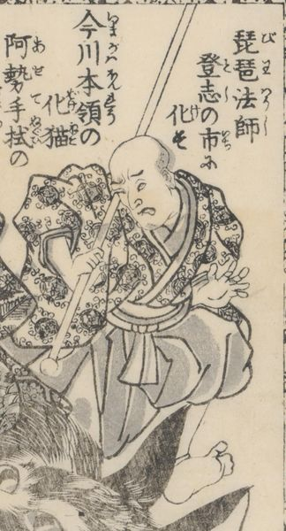

琵琶法師；ビワホウシ，猫魔；ネコマタ，化猫；バケネコ，猫又；ネコマタ

今川本領の化猫。阿勢手拭の怪異。琵琶法師登志の市に化けている。片目をつぶっている。棒を持って見得を切っている。
著作者：一陽齋豊國ほか／出典：親書誌：U426_nichibunken_0444：庭訓武藏鐙／日付：2017／資源識別子：U426_nichibunken_0444_0012_0000
Copyright (c)2010- International Research Center for Japanese Studies, Kyoto, Japan. All rights reserved.